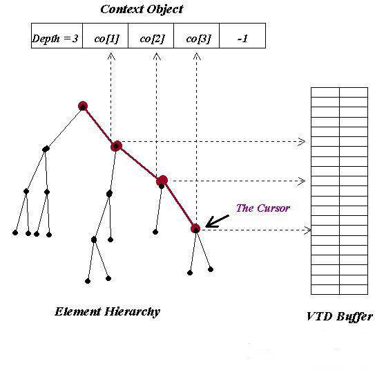
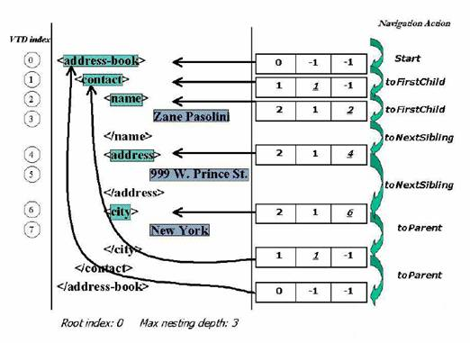

3. Navigate XML
After the parser finishes
processing XML, the processing model provides two views of the underlying
XML data. The first is a flat view of all VTD records. Corresponding to
all tokens in XML in document order, it can be thought of as a view of cached
SAX events. The second is a hierarchical view enabled by a cursor-based
navigation API allowing for DOM-like random access within the document.
And the cursor always points to the VTD record of the current element. In
this section, we first describe the important concepts and internal
constructs of the navigation API, then demonstrates how everything works
together to achieve the purpose of navigation.
3.1 Context
Object
To navigate the element
hierarchy represented by VTD and location caches, the processing model
first creates an integer array (whose size equals the maximum depth M) we
call Context Object (CO). Its primary purpose is to track, at any given
moment of navigation, the position of the current cursor in the element
hierarchy. We use the first entry (CO[0]) in the context object to
indicate the current depth of the cursor. The rest of the array is laid
out as follows: Assuming the current depth of the cursor is D (D <= Max_depth), we place the VTD indexes of the cursor and all its ancestors
(except root index) into the context object according to their depth
values (CO[1] ~ CO[D-1]), as shown in Fig. 4. Any unused entries are
filled with -1.

Fig. 4. Mapping element hierarchy into
Context Object.
Additionally, the context
object maintains the necessary state when one wants to look up the
namespace URL for a given prefix. This is done by a bottom-up search
starting from the attribute tokens under the current element. If no match
is found, move up one level and look for attribute tokens of the parent.
Repeat this process until one finds the matching name space token and the
URL value.
3.2 Element
Indexing Strategy
While the context object
maintains the necessary internal state for navigating the element
hierarchy, it does not fully specify how to obtain those VTD indexes from
the VTD buffer and LCs. Indeed, the element indexing strategy of the
processing model strongly influences the internal behaviors of the
navigation. We summarize those strategies and corresponding navigation
behaviors below:
-
VTD scan without LCs-
With this option, the processing model doesn't allocate or use LCs at
all. Because a VTD record encapsulates both its depth and type, one
simply obtains the VTD index of its sibling and children by directly
scanning the VTD buffer. Scan backwards if one wants to find the
previous sibling; scan forward for the next sibling, the first child and
the last child. In fact, the processing model emulates the behavior of
Xerces' nodeIterator by scanning VTD buffers for element tokens and
simultaneously updating the content of Context Object. The performance
is bound by the maximum bandwidth of the memory. For SOAP header
processing purposes [6], this option provides an important capability
that a SAX parser lacks by default, i.e. being able to go through the
same content multiple times without reparsing.
-
Full element
indexing- The processing model can choose to index all elements in
XML, i.e. one LC per depth level up to the maximum document depth. In
this case, VTD indexes are entirely looked up from LCs.
-
Proximity element
indexing- For this, we can heuristically pick a depth level so that
navigating below that level is by LC lookup; above that level, scan the
VTD buffer. We find this strategy suitable in many situations for
several reasons. First, full element indexing incurs the cost of
allocating LCs and indexing element. Secondly, scanning the VTD buffer,
effectively a large number of sequential memory reads, is precisely what
the current generation of memory technologies (e.g. DDR SDRAM) are best
at. For example, Micron's Samurai DDR chipset (64-bit data bus) [8]
running at 133 MHz delivers maximum throughput of over 2GB/s.
Furthermore, since one of our design goals is to move the processing
model on chip (more discussion later), in order for custom hardware to
process XML in a single pass, we find it much easier to hardcode levels
of LCs in silicon. Full element indexing in hardware is difficult
because the hardware is less flexible and lacks a priori knowledge of
the depth of XML. Our initial software implementation employs this
proximity indexing strategy with a pre-chosen value of 4.
3.3 An
Example
In Fig. 5 we show
the content of the context object during a typical navigation run. VTD
records and their corresponding tokens are highlighted and labeled with
their VTD indexes. We use green color to indicate the element tokens since
the cursor only touches those during navigation. Initially, the cursor
points to the root element. As it moves deeper into the hierarchy, the
depth value and the corresponding entry (underscored ones in Fig. 5)
are getting updated to reflect the position change of the cursor. To move
up the hierarchy, we only need to update the depth value and the
corresponding entry in the context object.

Fig.5. Navigating XML
using VTD.
3.4 Important
Methods
In our reference
implementation, we organize various parsing and navigation functions into
two classes: VTDGen and VTDNav. VTDGen takes as the
input an in-memory byte array containing the XML document, and produces
VTD records and location caches. VTDNav contains the member methods
that navigate the hierarchy, compare tokens to strings, and convert tokens
to strings or numerical data. In Table 1, we list some of the
important member methods of VTDNav.
|
Method Name/Signature |
Description |
|
Boolean
toElement(int direction) |
This is the primary
function for element hierarchy navigation. |
|
Boolean
toElement(int direction, String elementName) |
Same as last one, plus
one needs to specify element name |
|
Int
getText() |
This function returns the
VTD index for the text node of the current element |
|
Int
getAttributeValue(String attributeName) |
This function returns the
VTD index of an attribute
value for a given
attribute name |
|
Int
parseInt(int index) |
This function takes a VTD
index and returns the integer value represented by the token content |
Table 1. Selected
Member Methods of VTDNav